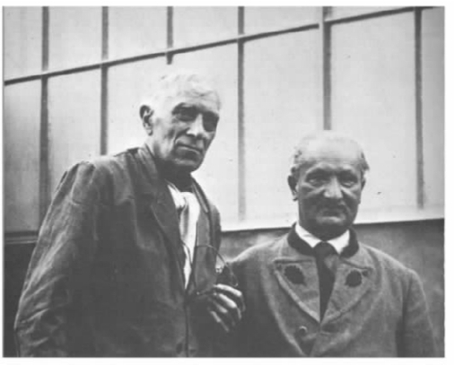

海德格尔从此在的“一般日常性”开始考察。并非所有此在的能力都是在一般的日常性中运用的。它并不作出重大的决定，也不从总体上思考它自己的死亡。首先它并不像哲学家那样，概念性地反思自己的状态。为了对自己研究哲学的能力提供说明，甚至于为了反思日常的状态，海德格尔必须超越一般的日常性。但哲学家也是人，跟其他人没什么两样，他大部分的时间都处于日常性的状态中。如果认为此在一直不停地处于哲学探究中，那就是一个严重的错误。不管什么情况，处于一般日常性中的此在与其更为高级的形态有着诸多共同点。
不论是一般日常性中的此在还是其他状态中的此在都是在世的。石头、树木、奶牛和锤子也是在世的。此在在世的方式也跟它们一样。但此在的在世还有另一层意思，甚至是奶牛这样的其他实体不具有的意思。与石头、树木或奶牛不一样，此在会意识到并熟悉这个世界，还可以意识到世界上的其他东西，并且也有自我意识。它之所以如此是因为它“对存在的理解”。它不是自我封闭的主体，只对自己的精神状态感兴趣。假使真是这样，它就会有一个确定的“什么”，这样就不会甚至不需要是在世的。如果此在有自己确定的本质，并且至少部分地不是自我构成的话，它就可能不需要一个赖以栖身的世界。但事实却是，此在只要存在或者至少以其独特的方式存在，就需要与一个充满着实体的世界打交道。
此在的世界是什么样子的呢？它基本上并非是一个由自然实体构成的世界。此在的世界里最直接和最明显的居民，除了此在本身之外，就是它日常所使用的工具和设备了，例如锤子、钉子及用来做鞋的皮革。工具和设备放在作坊，即此在的直接的周遭世界里。但这个世界又指向自身之外的更大的世界，指向购买鞋子的另外一个此在，以及提供皮革的那些人。这又反过来指向了自然，不是自然科学家所谓的自然，而是作为皮革来源的奶牛以及奶牛吃草的草地。胡塞尔后来称之为世界，即我们自然而又正常地生活在其中的世界，也就是Lebenswelt，或“生活世界”。但海德格尔简单地称之为世界（Welt），比直接的“我们周围的世界”（Umwelt）更广阔的世界，一个劳作的世界。
哲学家通常倾向于忽略这层意义上的世界。他们认为此在所处的世界是由广延的自然实体组成的。笛卡尔在其《第一哲学沉思集》一书的第1版开头部分就怀疑生活世界的实在性，比如他面前的火、身上的披风、手中的笔和膝上的纸。当他在书的后面部分克服了这一怀疑，又重新恢复了对外在世界的信念的时候，这个世界则是一个数学物理的世界，一个由他认可的可量度的广延事物组成的世界，而不是由火、披风、笔和纸组成的普通世界（Umwelt）。但即使是想不偏不倚地描述这个世界的哲学家，也容易犯描述错误。像胡塞尔这样的现象学家，会通过“首先从所有的‘意指’谓词进行抽绎，将自己纯粹地限制在‘外延实体’（resextensa）上”（《笛卡尔式的沉思》，47），来描述用以下的方式经验桌子这样一件事情。我围绕桌子走的时候，它向我展示了不同的侧面，尽管这些侧面彼此之间形状和颜色不同，但由于它们都系统地联系在一起，因此我通过“保留”或回忆我已经看到的桌子的各个侧面，最终将它们“合成”或拼合成如其客观上所是的桌子的概念，即一个棕色的、长方形的、由四条腿支撑的面。海德格尔在早期于弗莱堡所作的关于本体论的讲座中（lxiii.88—92）对此进行了完全不同的阐发。我看到的不仅仅是一张 桌子，而是这张 桌子，这间 屋子里的这张桌子。这张桌子可以用来写字或吃饭。我看到的是有所用的东西，并非首先看到的是作为广延物、只有到了后来才将其看成是有所用之物的它。我几乎没有注意到桌子的几何维度或根据指南针测量出来的空间方位。我会看到它的位置摆得好不好，比如说，是否离灯光太远不宜展卷阅读。我会注意到桌子上的划痕，并不是因为划痕影响了桌子颜色的协调，而是孩子们对它造成的损坏。我会回想过去，然后记起就在这张桌子旁我们过去常常讨论政治问题，或在它旁边我写出了第一本书。
在这段阐述中，海德格尔在思索一个世界，或者说思索这个世界的一部分，而没有像工作中的工匠那样积极地与世界打交道。但这两种情形有着重要的相似之处，也有着不同点。首先，这里完全没有在根本上涉及理论性认知，甚至连必要的涉及都没有。工匠不会将手中的锤子视为有特定几何和物理属性的实体，海德格尔也不会这样看桌子。锤子和桌子这二者都是首先被看做可以使用的物体，与人类的目的相联系：锤子是用来锤打的，桌子是用来吃饭或写作的。
其次，锤子和桌子都没有被看做是和周围环境中的其他实体隔离开来的。锤子的用途是用来钉它旁边的钉子，或者将皮革做成鞋子等等。桌子离窗户太远，它是我所听到的窗外的人们平常吃饭用的，也是我曾用来写作摆放在架子上的那本书的。房间或作坊里的不同实体都相互涉及。这样它们就共同构成了一个有意义的整体——一个完整的作坊或者房间——而不是实体的一种任意集合。以这些方式彼此涉及的物体，如果作为某种用途，就会极为明显和容易地构成一个“意指”的领域——海德格尔称之为“有待上手的”（zuhanden），与那些只是“现成在手的”（vorhanden）实体形成了对比。作坊与房间都不是自我封闭的环境。作坊与它所含之物涉及自身之外的顾客、奶牛和草场。房间也会涉及做桌子的木匠、食品供货商、印书的出版商等等。在每一种情形中，与我们直接相邻的周遭世界都会指向外面一个更大的世界，但这个更大的世界依然锚定在此在及其需要和目的之中。
第三，这两种情形都涉及了时间与空间，但是胡塞尔赋予它们的角色不同。胡塞尔首先感兴趣的是几何图形，既有连续呈现在我们眼前、经由不同视角观察到的桌子的侧面构成的形状，也有我们把这些侧面拼合而成的实际桌子的形状。时间对胡塞尔来说首先是我们关于桌子的经验方面的时间意识。当我第一次见到桌子的时候，我所经验到的不是桌子的整体，而是从以前观察桌子时所取的角度形成的一个侧面。如果我以前见过桌子，当我绕着桌子走的时候就会预期到我的经验将会属于哪一类，从而“先期获得”我随后的经验。当我继续绕着桌子走的时候，这些预期或“预持”就会被我实际经历的经验“兑现”。但如果我即刻就忘记了先前所经历的经验，抑或是没有“保留”我过去的经验并且不具有当下的这个经验、不能先期获得即将到来的那个经验，这一切就基本没有用处。记忆的保留和预持使我能够意识到我的经验的时间性流动，也使我能够把这些经验看做一张客体性桌子的经验，其实际形状并不精确地等同于对它的任何一次经验。尽管胡塞尔的分析给海德格尔留下了印象，但在海德格尔看来，时间和空间发挥着不同的作用。我们在桌子身上所自然关注到的不是它精确的形状和尺寸，而是它的大小是否合适、摆放的位置方不方便我们使用它。它的大小能不能容得下全家人一起坐下吃饭？它是否离灯光或书架太远而不利于写作？房间内的物体要适得其所。作坊内的物体也如此。钉子、皮革和锤子都放在工作台上够得着的地方。作坊内的鞋匠可以透过窗户看到窗外路的一头伸向镇中心，另一头伸向他姐姐居住的邻村。他不知道这两个地方与他相隔的确切路程，但他知道去镇中心的路程很短，而去邻村的路程要费些时间，每次他到那里的时候都已经感到饿了。（希腊的农民通常以路上抽烟的数量来表示从一个地方到另一个地方的距离。比如说，邻近的村子有两根烟的距离，而一次长途的步行需要抽一整包烟的时间。）对海德格尔来说，时间也是一种“意指性”的事物。桌子向前指向了它将来的用途，向后指向了过去的事件——孩子留在上面的划痕，他伏案所写的书等等。全神贯注用锤子钉鞋的鞋匠也是如此，向前他隐隐约约看到将要完成的鞋子，还看到了需要订购的新一批皮革，而朝后看到的或许是他的年轻时代，当时教他手艺的是父亲，并且从父亲手里他把这间作坊继承了下来。
但是，这两种情形之间有一个重要的不同。当海德格尔观察房间的时候，他注意到桌子上的划痕，清楚地回忆起曾在桌子旁吃饭、写作和谈话等等。与此不同的是，当鞋匠专注于钉钉子时，并没有明确注意到或在意他的工作台、坐着的凳子以及身边的一堆钉子。他不一定在考虑客户、原料供应商和草场里的奶牛。这些东西对他来说都在那里 ，他潜意识里意识到它们，但它们是不明显和不惹眼的。或许他是用眼角的余光看见它们的，并没有注目于其上。这种可能性是存在的，因为这些实体相互涉及，构成了一个意指网络。凳子、工作台、身旁的钉子，甚至是锤子本身，只要是各适其所，准备好了在他的工作中发挥自己应该发挥的作用，就都会保持不显眼的状态。要是它们中的某一个出了问题，鞋匠就会注意到。例如，锤头脱落或凳子垮了，它们就会变得显眼。或者，他的皮革不见了，用完了，或者没有放在合适的地方，那么与先前相比皮革就会变得显眼起来。
以上情况对于鞋匠本人也是如此。在海德格尔看来，胡塞尔的“自我是在持续的明证性中为自身存在的自身”（《笛卡尔式的沉思》，66）这种说法是不正确的。当鞋匠专注于工作时，他的注意力集中在锤子所敲击的钉子或正在制作的鞋子上。他几乎没有意识到自己，甚至连自己的身体都意识不到，更不用说“自我”了。如果身体出了什么问题，他可能会关注自己。否则，对他而言，他自己就如同身旁的钉子和鼻梁上的眼镜那样不显眼。过去的哲学家将事物变得非常显眼，这是个由来已久的错误：“当对物体的指向被当做意识的基本结构时，在世的存在的特征就会被描述得过于明晰和显眼。”（xvii.318）
因此，对于日常的此在而言，世界及世界中的事物一般是不显眼的。这引发了一个问题。哲学家与日常的此在并不是不同的类属，他们怎么可能超越一般的日常性，从而注意到日常的此在没有注意到的方面呢？海德格尔之所以视自己为现象学家，是因为他将通常不显眼的事物明晰化，但他做到这一点并不是依靠非日常性的实验或深奥的论证。海德格尔察觉到并用概念的形式表现出来的东西，在某种程度上讲是那些一经他指出就会对每个人变得显而易见的东西。但海德格尔为什么能首先注意到呢？反过来讲，我们不妨认为，海德格尔所指出的东西非常显明，而其中的奥秘在于以前的哲学家都忽视了它。海德格尔的这一任务很复杂：他不仅要分析此在，说服我们相信此在的正确性，还得解释为什么他——与日常的此在不同——能够作出阐述，以及为什么其他的哲学家做不到，尽管他们自身也并未一直陷于日常性中。
此在与世界并非两个各自独立变化、截然不同的实体。他们是互补的。我们如果以某种方式虑及其中一个，也就会以某种方式虑及另一个，或者说至少要排除掉其他一些考虑方式。如果我们用笛卡尔的方式看待这个世界，把它看成是一个广延事物的集合，我们自然地就会把自我视为思考物。反过来说，我们如果将自我视为思考物，也就会自然地视自我所处的世界是由现成在手的广延之物组成的。如果我们不接受这一阐述，而是将世界视为一个意指网络，我们就对此在采取了不同的观点。此在对其周围事物的态度是一种切实而周全的关注，而不是不偏不倚的思考。海德格尔并不否认有那些不负责任的鞋匠，不用心干活，或者一个通常很勤快的鞋匠今天由于头疼而干活不专心。即使我们平时所谓的缺乏关注也是一种关注——此在从来都不会像石头、树木或奶牛那样缺乏关注。但是，此在的态度并不仅仅践于行。实践与理论、行动与知识之间通常意义上的差别，是一种超越了日常此在水平之上的构建物。此在也认识事物。它会知道锤子的用途；知道怎样使用锤子；知道皮革存放在哪里；知道作坊周围的路。当然它不能说出自己是怎样认识所有这些的，也不能将它的认识用语言表达出来。有些事物践行容易言表难。但此在不仅践行事物，而且还能认识事物。如果它不这样做，海德格尔意义上的世界就不会存在。没有人会使用或从来没有人知道怎么使用的工具不能构成一个互指性的意指网络；它们可能就像默默躺在无人居住的沙漠里的那些石头。
此在不仅了解作坊里的那些物件，知道如何使用它们，而且还知道其中的世界以及这个世界中的道路。我们可以借助使我们能够在熟悉的小镇找到路的方向感，来有效地说明海德格尔的观念。我们不容易讲出我们是怎么做的，也不太容易给一个陌生人指出清晰的方向，但我们却能够轻松地为自己找到路。我们不需要根据路两边的房子和巷子判断出一条熟悉的路线，费尽心思地找到自己的路。我们朝目的地径直走去，常常不会留意沿路周围的环境。我们一般用不着地图。事实上，地图对于完全没有方向感的人来说几乎没什么用；即使在地图上找路，也需要有方向感才能把地图与我们周围的环境对上。这不仅仅是一种类比。因为，海德格尔强调，此在的世界是空间的世界。这种空间意义不是笛卡尔和牛顿（甚至莱布尼茨）世界中的空间意义，他们的世界是冷冰冰的，有着中立的坐标轴。它是一个有着方向性的世界——上下、左右、前后以及东南西北。它是一个事物有远有近，而距离并不是只按英里或公里丈量的世界；对于中间隔着一条没有桥的河，或是横亘着没有道路的山这样的距离，尽管近得连乌鸦也能飞过去，却也是遥远的。像眼镜那样靠近的东西也可以遥远得不能看见。这是一个万物各得其所的世界，不是一个纯粹欧几里得的世界，在后者之中物体可以占据任何适合其尺寸的地方。
这种在世存在怎么可能？此在难道只是白板一块，世界提供给它什么它就接受什么？海德格尔并不这样认为。既然此在与世界是互补的，世界的特征就可以用此在的特征来解释，这其中最基本的特征就是先天性（a priori）。此在的大部分所知当然是在其生涯中较晚的时候习得的。一个此在能够使用文字处理机，并可以熟练操作键盘，但它可能对板球知之甚少，或对鞋匠铺里的细节了解不多。另一个此在可能了解板球或者制鞋工艺，对文字处理机则一无所知。但无论多么地隐晦或不明确，我们对工具和设备都会有所知，知道“工具使用的场合”是什么，板球的球场、鞋匠的作坊和作家的书房有何相同之处。即使一个具有完全不同的文化背景的人，对我们的行为和工具完全不熟悉，如果他被带到我们这个世界，也会认出他所看到的作坊，而不会把它看成仅仅是乱七八糟堆在一起的实体，哪怕他对做鞋的细节一点也不了解。（xx.334）理解何为工具以及放置工具的世界是什么样子，这是此在对存在最为本质的理解的一部分，缺了这一部分，此在就不成其为此在。
或者我们不妨再谈谈空间性。此在并非简单地从周围的世界获取方向感。此在是空间的，世界因此也是空间的。一个在梅斯基希或弗莱堡能够轻易认出路来的此在，当然不能立刻将它的这一能力应用到马尔堡、柏林、洛杉矶或戈壁沙漠。如果来到以上任何地方，它就会迷失方向，即使它可以辨认出具体的建筑、街道或沙堆，也找不到自己的方位。但此在的这种方向迷失正是其内在空间性的标志。它很快就会给自己定向，用熟悉的空间方向来观察新的环境。
海德格尔就我们与他人的关系也作了类似的阐述。哲学家，尤其是（但并不仅限于）诸如胡塞尔那样认为人类起码了解其自身心智状态的哲学家，会用如下的方式呈现出我们对他人的意识。首先我意识到自己的存在和其他与人无关的实体。我了解自己的体型、外貌和我自己身体的作为，同样还注意到我所具有的内心体验。然后我注意到有其他实体跟我自己的外貌类似，受同样的刺激后，也会作出在广义上讲差不多的举动。接下来哲学家就要弄清楚我如何可能——易于理解并正当有效地——把类似于我的心智状态赋予这些存在。难道是通过移情？那么移情又是怎么可能发生的呢？
海德格尔认为，看待此问题的这一方式是十分错误的。它既忽视了此在对存在的理解，也忽视了此在的在世存在。只要此在存在，它就“同他者在一起”。它既了解自身或其他实体，也了解另外一个人是谁。它不需要在了解一个人的体貌细节后才发现那就是一个人；我们通常不需要意识到他人的外貌细节特征，就能意识到他们的存在，意识到他们在做什么以及他们对我们的态度。即使周围没有他人——例如，作坊空无一人，或无人居住的沙漠——这些他者虽不在场却显在着：“即使此在是孤单一个，它也是在世性地同在（being-with）着的。”（xx.328）海德格尔并不仅仅是在描述我们对于他人经验上的现象特征。他相信，他是在描述此在的结构特征。单一的此在是不完整的。它没有属于自身的本性可以安身其中，只好自己去决定如何存在。可是，此在所做或所是的几乎一切都是需要他人的，比如需要原材料供应商、需要商品买主，或者需要有人倾听、需要有人阅读。此在的世界是一个公共的世界，一个它自己和别人都可以进入的世界。
在这些情形中海德格尔并没有谈及此在的知识。“知识”这一术语表明某物总体上过于明晰且理论性较强。他宁愿用“理解”这个词——理解如何做事、理解这个世界、理解他人，从总体上讲，也就是理解存在。但在解释什么是理解之前，他先谈到的是情绪 。
情绪常被认为是精神性的东西，是我们内心的情感，在我们与世界打交道的过程中扮演一个充其量是受压制的角色。但海德格尔并不这么认为。处于某种情绪就是以某种方式看待这个世界。它会实质性地影响我们与世界打交道的方式，以及对世界中的实体作出反应的方式。情绪与情感不同。情感涉及的是特定的实体。我对某事很生气，我常生某人的气。但如果我处于一个暴躁的情绪中，尽管我也许比平常更容易对具体的事情动怒，但我不一定要对某一件事感到暴躁。如果情绪指向任何事情，它们指向的就是世界而非世界的实体。焦虑、无对象的愁虑（Angst）或厌烦（借用海德格尔的例子）笼罩着整个世界，它们不同于面对具体的威胁所产生的恐惧或对某个具体事物的厌烦，比如对一位部长演讲的厌烦。情绪几乎不能为我们所掌控。我可以控制我的行为，决定做什么，遏制自己想做某事的冲动。在某种程度上我可以控制自己的情感：我可以克制自己不去羞辱令我生气的事物，我也可以去考虑其他的事情而让自己慢慢消气。但是情绪想来便来，想去便去，不由我们来牵引。它们不针对具体实体，所以我不能通过操纵具体的实体来消除我的沮丧情绪；不论我将注意力转向哪一个具体实体，它们都笼罩在这种情绪下面。海德格尔用下面这一个不寻常的词表达这种情绪：Befindlichkeit；该词的大致意思是“怎样找到自我”，“怎样被找到”或“近况怎么样”，它通常被译成会引起误解的“心理状态”。德语中更常用的表示情绪的词Stimmung也有给乐器“校音”的意思，海德格尔利用了这层联系：处于某种情绪就是以某种方式校音或调音。
但情绪真有海德格尔所认为的那样重要吗？我们大多数人在大多数时间里都处于一种莫名的情绪中。即使情绪不好，我们处理日常事务的方式同我们情绪好的时候也差不多。那什么是日常事务呢？拿前面我们讨论过的例子来说，为什么海德格尔观察桌子以及摆放桌子的房间的方式同工匠在作坊里观察它们的方式一样，尽管海德格尔并没有像他那样工作？是因为房子里只有他一个人吗？并非如此。或许隔壁房间的人正在进行热烈的交谈或正在打牌。即使他真的是一个人，他也可以利用这个机会读书或草拟一份写作计划。是不是因为他比别人更理解或更不理解他所处的环境？不是。从相关意义上讲，房子里的工匠和其他人同海德格尔所理解的并无二致。他们有时也会审视自己周围的环境，尽管不能像海德格尔那样恰如其分地描述出来。这肯定是因为海德格尔处于一种（比如说）忧郁性怀旧的状态之中。他没有情绪谈话、打牌、阅读或写作。如果有人哄骗他或者他不顾这种情绪硬撑着去参加这些活动，他当然也可能很快摆脱目前的情绪。但不是所有的情绪都可以很轻易被驱散或克服的：

图5海德格尔与乔治·布拉克 [1] 在瓦朗日维尔，摄于1955年
约翰·班扬：《功德无量》
但也有人反对说，很少有人会长时间陷入这种无能为力的情绪中。我们难道不能忽视这种情绪，因为它对在世的存在不重要？即使我们可以做到，也并不代表这种情绪不重要。因为如果忙碌的工匠或沉思的海德格尔不处于或不可能处于班扬所描述的这种情绪中，他们也肯定处于其他情绪中。此在从不会没有情绪，就像它不会无所关心一样。处于一种一般的、日常的且表面上看起来没有情绪的状态其实也是一种情绪 ，尽管我们没有现成术语或简短的定义来描述它。配乐对于揭示电影所展现的世界常常至为关键，它会传达电影的情绪——满足、兴奋、焦急的盼望或一般的日常性。但只是在电影中情绪需要音乐来表达。我们则不需要特别的帮助就会给世界带来我们自己的情绪。
无论如何，将班扬的情绪称之为无能是否恰当呢？这种情绪如果持续下去，会妨碍我们制鞋、写书，也会妨碍我们过乏味的日常生活或作重大的决定。这并非我们平常所认为的对任何一种大多数人都会犯、远不止班扬本人才会犯的罪恶的恰当反应。大多数人都会很高兴没有处于这种情绪之中。但是，大多数人也都不是哲学家，能像海德格尔那样具有如此之高的境界和十分投入的意志。因为海德格尔相信，这样的情绪揭示了我们平常没有意识到的事物。它们以日常事务不可能实现的方式照亮了这个世界和我们在世的存在。当工匠发现一件工具丢失了的时候，他就会瞥见他的世界，瞥见这个世界的世俗特征；他在明显的不在场的部分中注意到了整体。但班扬的这种情绪对于揭示这个世界更为有力、更令人难忘：它揭示了这个世界的世俗性，并且通过对比也揭示了这个世界日常的不突显性。海德格尔认为，这种情绪（或者至少那些不太极端的情形如厌烦和愁虑）是哲学家见识的重要来源。但是，它们并非理所当然地专属于哲学家。非哲学的、平常的此在也倾向于出现这些情绪，于是情绪在海德格尔解释此在如何成为哲学家的努力中发挥了一定的作用。
不过，光靠情绪并不能揭蔽这个世界。为此我们还需要理解。
此在每天都在理解世界、世界上的事物以及此在本身。在这里，我们再次发现日常的此在与哲学家之间有着一种联系，因为海德格尔也想理解和阐释此在、世界以及它们的存在。（他在《存在与时间》的导言中将他的研究称做是阐释学的，亦即阐释性的——有点像对文本的阐释，但并不完全像。）海德格尔的研究是对此在日常作为的继续，但又不是简单的继续。因为海德格尔想对他的理解对象作出概念性的阐述，而日常的此在只是进行前概念性地理解。它的理解同理论性的认知不同。相反，认知对我们想要了解的内容预设了先验性的理解，正如海德格尔对存在意义的概念性阐述也先期预设了对存在的先验性理 解 。因此，理解并没有与其他诸如了解或解释这一类接近事物的方式形成对比。理解由所有这一切方式所预设，因为它部分地构成了我们的在世存在。
与其说此在所理解的是它所置身其中的环境当中的某个具体的个体，还不如说它是在理解整个环境以及它自身在其中所处的位置。但此在并不仅仅是像一个人理解他完全置身其外的陌生文本或文化那样理解它的环境。它理解环境的方式是向后者呈现一系列的可能性。如果不这样理解，它就不可能将环境理解为“意指性的”。尽管海德格尔谈到了理解把此在“筹划”到诸种可能性上，但在他的心里并没有什么如“筹划”或规划那般明确、审慎；他所想的只不过是，“此在只要存在着，就总是会筹划着，也总是会从可能性来理解自我”（《存在与时间》，145）。鞋匠将其作坊看做一个对他而言有着无限可能性的场域，并且可能正在思考接下来要做什么。即使无忧无虑晒日光浴的人，也在利用诸如继续躺在原地、下到海水中抑或续杯子里的饮料这些可能性来理解自己。此在“一直大于它的实际存在”（《存在与时间》，145），总是（除非处于睡眠状态）在继续存在的各种可能选项中权衡。人不是仅仅在外界的刺激下才行动的被动生物；他总是时刻主动地行事。
比理解更显在的是阐释。阐释（Auslegung）在德语中还有“展开”之意。我所阐释的不是我所处的整体环境，而是环境中具体的个体，还有我自己。我将某物阐释为某物，比如阐释为锤子；我主要是通过它的用途来阐释的，比如这里锤子是用来钉钉子的。尽管阐释不集中在整体环境方面，但它预设了对环境的理解。除非我事先对钉子、木头等等有所了解，否则我就无法阐释锤子。同理，除非我事先对工具和设备有先验性的大致了解，我才能把某物理解为锤子。海德格尔坚持认为，在我把某物阐释为锤子时，我并非首先把这个实体简单看成是现成在手的，看成上面嵌着一块铁的一段木条，然后把它阐释为一把锤子。我从一开始就隐在地把它理解为有待上手的（Zuhanden），理解为工具：
（《存在与时间》，150）
在海德格尔看来，任何阐释都涉及“先有”（Vorhabe）、“先见”（Vorsicht）和“前概念”（Vorgriff）（《存在与时间》，150）。阐释者首先有自己阐释的对象；例如，海德格尔在阐释此在之前，对此在就有了初步理解。阐释者从某个角度观察物体；海德格尔通过参考此在的存在来考察此在；阐释者有前概念，即用他所提出来的对客体的阐释所表述的概念；海德格尔会用诸如“存在”这样的概念来阐释此在。所有的阐释，不论是日常的还是哲学的，都会涉及这样一个“先结构”。